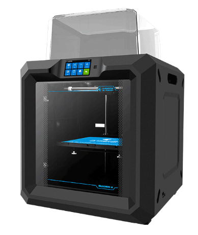
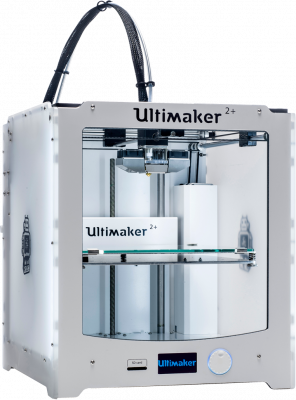

TATA CENTRE FOR TECHNOLOGY AND DESIGN
Flash Forge Guider II

Machine Specs:
Print volume: 280X250X300(mm)
Filament Diameter 1.75mm
You have to bring your own material
The machine is compatible with ABS, PLA, TPU(Flexible) and more..
more information
Ultimaker II (2nos.)

Machine Specs:
Print volume: 230X225X205(mm)
Filament Diameter: 2.85mm
You have to bring your own material
The machine is compatible with ABS, PLA and more..
more information
We take 20% of material everytime the print weight goes above 200gm
Prints longer than 2 days are not enterained.
Current Machine Queue
To join the queue click here.